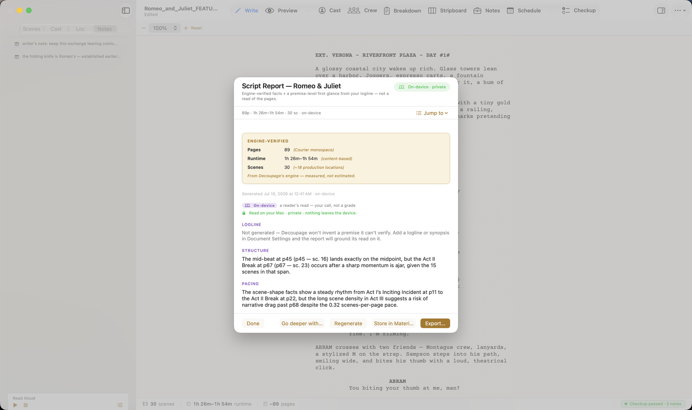
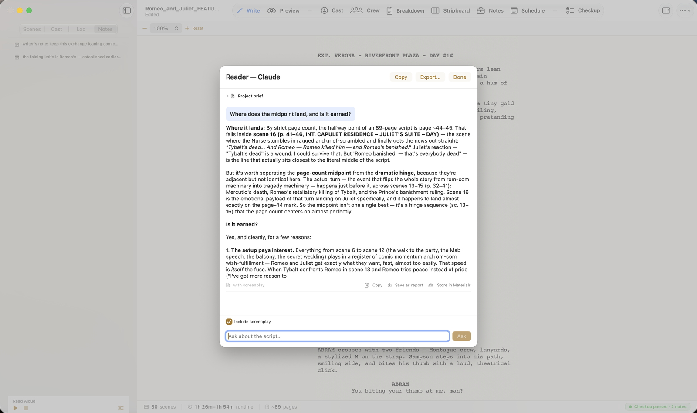

The two tiers
🔒 On-device — runs on your Mac using Apple's built-in intelligence. Your script never leaves the machine. It's private, free, and needs no setup — it's simply there on a Mac with Apple Intelligence. Decoupage marks it "On-device · private."
☁ Cloud (Claude) — sends your script to Anthropic's Claude for a deeper read. It is off by default and requires your own Anthropic API key (you pay Anthropic per use). This is a deliberate, explicit opt-in, because your script is your intellectual property and using the cloud means it leaves your device. Decoupage never turns this on for you.
The short version: on-device is private and always available; cloud is more powerful but it's your call, your key, and your data leaving the Mac. Neither is hidden from you.
Script Report — on-device 🔒
Reports → Script Report gives you a fast, private first glance at your script.

Two parts:
- Engine-verified facts (the gold card) — page count, runtime, scene count, speaking characters. These are measured by Decoupage's engine, not estimated or guessed.
- A premise-level read — a brief on-device take on structure and pacing, grounded in those facts and your logline.
Two things it deliberately does not do:
- No verdict. There's no PASS / CONSIDER / RECOMMEND grade — that's not what a first glance is.
- It won't invent what it can't verify. If you haven't written a logline or synopsis (in Document Settings → Submission), the report says so rather than making one up.
If you want to go further, Go deeper with Claude… hands off to the cloud tier.
Reader — cloud ☁ (Claude)
Reader (Tools → Reader) is a conversation about your script. Ask anything — "Where does the midpoint land, and is it earned?", "Which scenes flatten the two-hander?" — and Claude reads the full script and answers, grounded in the actual pages.

- The Include screenplay toggle controls whether the full script goes with your question (on, for grounded answers).
- Each answer shows how it was produced and offers Copy and Save as report.
- The Project Brief is Reader's memory — a short, editable description of your project that Reader keeps in mind. Update from conversation proposes brief updates you accept or discard. It lives inside the
.dcpgfile, so your Reader history and brief travel with the document.
Reader needs the cloud tier turned on (below). Until then it shows "Set up Reader in Settings."
Deep Read — cloud ☁ (Claude)
Reports → Deep Read is the heavyweight: Claude reads the entire script page by page and writes development notes, the kind of feedback a development executive would give.
Because it's the most involved cloud call, Decoupage shows you an estimated cost first ("this deep read will cost … · your Anthropic API account") before you Run deep read. Export the result as a PDF. Like Reader, it needs the cloud tier enabled.
Turning on the cloud tier
Cloud features (Reader and Deep Read) live behind one switch. Open Settings (⌘,) → AI → Decoupage AI (Claude).

- Enable the cloud Claude features — off by default; flip it on to reveal Reader and Deep Read.
- Model — Claude Sonnet (recommended, balanced), Opus (deepest, priciest), or Haiku (fastest, cheapest). A cost preview accompanies each read.
- API key — paste your own Anthropic key (
sk-ant-…). Get one atconsole.anthropic.com. Decoupage stores it and shows only "API key stored ✓" — never the key itself.
Decoupage is transparent about what the cloud tier does: Anthropic's developer API does not train on your inputs or outputs, but your script does leave your device to a third party briefly. That trade-off is yours to make — which is exactly why it's off until you choose it.
- ✓Two tiers, always labeled: on-device 🔒 (private, free, no setup) and cloud ☁ Claude (deeper, your key, off by default).
- ✓AI never edits your script — every suggestion is confirm-first.
- ✓Script Report 🔒 — measured facts + a private first glance; no verdict.
- ✓Reader ☁ — grounded chat about your script, with a per-document Project Brief memory.
- ✓Deep Read ☁ — full development notes; shows the cost before it runs.
- ✓Turn on cloud in Settings → AI with your own Anthropic key; pick Sonnet / Opus / Haiku.